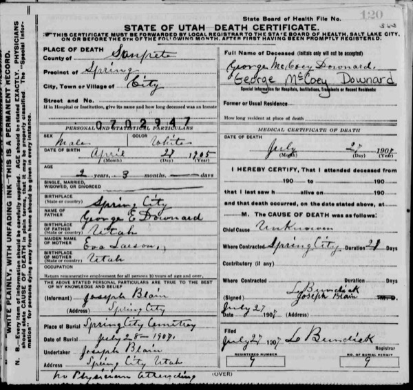
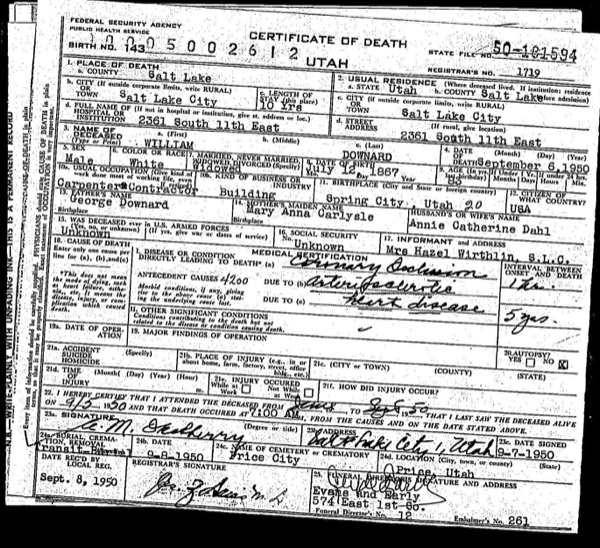

Family research
Existing Downard family archive Original homepage genealogy and Downard story. Evidence varies by entry.
Timeline George Downard born in Deptford · George Downard and Sarah Ann marry · John Louis Downard born · George Downard dies in Price · Clace Bradley and Walter Downard marry
Open the source ↗
Family research
Existing Lambson family archive Narrative, direct-ancestor biographies, and supporting references.
Timeline Barnabas Lamson in New England · Arba Lambson leads an overland wagon company · Norma Lambson and Thomas Downard marry
Open the source ↗
Family research
Sources for Lambson children Source notes for collateral relatives and children across seven households.
Open the source ↗
Immigration record
George Dowrard on the William Tapscott Saints by Sea, British Mission Register p. 138, passenger 15330. Records the variant Dowrard and occupation painter.
People George Downard , Sarah Ann Downard , Edward Hiram Downard
Timeline William Tapscott departs Liverpool
Open the source ↗
Immigration record
William Tapscott voyage Saints by Sea, voyage 435, Liverpool to New York, May 14 to June 25, 1862.
People George Downard , Sarah Ann Downard
Timeline William Tapscott departs Liverpool
Open the source ↗
Immigration record
Horton D. Haight Company Church History Biographical Database, ORG-C4N8FYD. Florence to Salt Lake City, August 10 to October 19, 1862.
People Edward Hiram Downard , George Downard , Sarah Ann Downard
Timeline Horton D. Haight Company departs Florence · Horton D. Haight Company reaches Salt Lake City
Open the source ↗
Property inventory
George Downard House Friends of Historic Spring City, George Downard House entry. Circa 1875 heading, late-1870s completion, 1882 sale to Joseph.
People George Downard , Joseph Downard
Timeline George Downard born in Deptford · George Downard House takes shape · George sells the Spring City house to Joseph
Open the source ↗
Historic register
Spring City Historic District registration National Register continuation sheet, section 8, p. 10, PDF p. 30. Lists George among possible carpenters or builders.
People George Downard
Open the source ↗
Land and livestock
Utah livestock brand books Utah State Archives, Division of Animal Industry, series 540. The research brief reports a May 24, 1876 Sanpete County GD entry. Locate its image and page.
People George Downard
Timeline GD livestock brand reported
Open the source ↗
Immigration record
Thomas Freestone’s 1853 company record Church History Biographical Database, PER-G4B3QY3. Includes Ann Fall and six children in the traveling group.
People Thomas Freestone , Ann Fall , George Freestone , James Fall Freestone , Elizabeth Ann Freestone , Rhoda Francis Freestone , Johannah Freestone , Emma Sarah Freestone
Timeline The Freestones travel with the Miller and Cooley company
Open the source ↗
Family history
George Freestone and his wives Pioneer Stories Database, family account of George, Alice Carlisle, and Jennie Lind.
People George Freestone , Alice Carlisle , Eraimine Georgine Lind
Open the source ↗
Book
A History of Uintah County: Scratching the Surface Doris Karren Burton, 1996. Printed pp. 232–233 and 374–375 for the Freestone references, pp. 382–384 for policing and juvenile court. Catalog consulted. Page images were not supplied.
People George Freestone , Clyde Thomas Freestone
Timeline Ashley Valley Co-op robbery · Tom reportedly appointed to juvenile court services
Open the source ↗
Family research
Family research brief Research supplied for this edition. Excerpts are labeled where original scans, OCR, or full issue citations are unavailable.
People Sarah Ann Downard , Edward Hiram Downard , Angeline Rebecca King , Gertrude Elenor Miller , Manual Louis Downard , Thomas Freestone , Ann Fall , George Freestone , Eraimine Georgine Lind , Reuben Thomas Freestone , Adora Elvira Batty , Clyde Thomas Freestone , Maurine Peterson , Maxine Peterson , Johannes Gustaf Pettersson , Ericka Munter , Erik Hilmer Pettersson , Mary Alvey , George Downard
Timeline Horton D. Haight Company departs Florence · Horton D. Haight Company reaches Salt Lake City · GD livestock brand reported · Tom Freestone and Maurine Peterson marry
Original image or full citation still needed.
Obituary
George Downard’s obituary Supplied summary. Newspaper title, issue and page to verify. Reports age 81 and arrival in Price around 1879.
People George Downard
Timeline George Downard dies in Price
Original image or full citation still needed.
Newspaper
John L. Downard and Minnie E. Rogers marriage-license notice Supplied notice dated April 29, 1915. Newspaper title and page to verify. The date is the publication date.
Source publication date 1915-04-29
People John Louis Downard , Minnie Estelle Thompson Rogers Downard
Timeline Marriage license notice for John and Minnie
Original image or full citation still needed.
Obituary
Death of Minnie Downard The Price Sun, August 18, year and page unresolved. Corrected details supplied in the research brief. Original OCR and scan unavailable.
People Minnie Estelle Thompson Rogers Downard , Richard B. Thompson , Alfalona Fausett Thompson
Timeline Minnie’s family reportedly moves to Nine Mile · Minnie dies at the family home in Price
Original image or full citation still needed.
Newspaper
Report naming Mayo Hospital Supplied summary of a separate notice. Title, issue, page and original image needed.
People Minnie Estelle Thompson Rogers Downard
Timeline Minnie dies at the family home in Price
Original image or full citation still needed.
Newspaper
Woodside ranch sale report Supplied excerpt. Issue, page, buyers’ names and original image needed.
People John Louis Downard
Original image or full citation still needed.
Newspaper
John Downard’s move to Nine Mile Supplied corrected excerpt. Issue, page and community heading needed.
Supplied corrected excerpt Mr. John Downard has moved to Nine Mile. He sold his farm here. People John Louis Downard
Timeline Newspaper reports John’s move to Nine Mile
Original image or full citation still needed.
Newspaper
Bluebell report on proposed property negotiations Supplied summary naming Wade Harness. Issue, page and outcome unknown.
People John Louis Downard
Original image or full citation still needed.
Land deed
Harness to Downard warranty deed abstract Supplied newspaper abstract. Section 27, Township 1 South, Range 3 West, $3,600. Original deed, county, meridian, issue and page unresolved.
People John Louis Downard
Timeline Newspaper abstracts a Section 27 warranty deed
Original image or full citation still needed.
Land deed
Downard to Burt and Wilson to Harness deed abstracts Supplied newspaper listing. Section 27. The possible $3,200 amount for the Burt transaction is unclear in OCR.
People John Louis Downard
Original image or full citation still needed.
Newspaper
Woodside ranch shooting report Supplied summary. Issue, original image and victim’s identity unresolved.
Original image or full citation still needed.
Newspaper
Walter Downard and Clace Bradley marriage report Supplied notice dated September 15, 1921. Newspaper title and page to verify.
Source publication date 1921-09-15 Supplied corrected excerpt Walter William Downard of Price and Clace Bradley of Vernal were married in Provo this week. People Walter William Downard , Clace Sabey
Timeline Clace Bradley and Walter Downard marry
Original image or full citation still needed.
Newspaper
Bride-Elect Complimented Supplied summary. Issue and page needed. Reports June 30 wedding and Bishop John A. Harter. Mrs. T. A. Pedersen is described as Norma’s mother, but her identity has not been corroborated.
People Thomas John Downard , Norma Lucille Lambson
Timeline Norma Lambson and Thomas Downard marry
Original image or full citation still needed.
Obituary
Clyde Thomas Freestone obituary Supplied summary. Full obituary and military records to locate. Reports B-17 aerial gunner service, aircraft loss near Vienna, wounds and captivity.
People Clyde Thomas Freestone
Timeline Tom Freestone’s wartime service and captivity
Original image or full citation still needed.
Letter
Peterson family letter Supplied summary of the 1959 letter. Author, addressee and original image needed. Describes Hilmer arriving as a boy.
Record creation date 1959
People Erik Hilmer Pettersson
Timeline Family letter records an account of Hilmer’s immigration
Original image or full citation still needed.
Newspaper
Duchesne Record civil listing No. 83 Supplied reference to John Louis Downard and Wm. Downard. Original court file, page and result needed.
Source publication date 1916-09-02
People John Louis Downard
Timeline Duchesne Record lists civil case No. 83
Original image or full citation still needed.
Death record
Death record associated with George Downard Original scan preserved in the Downard story. Confirm record identifiers against the image.

Preview from the existing archive. Open the original scan in the story. People George Downard
Timeline George Downard dies in Price
Open the source ↗
Death record
Death certificate associated with John Louis Downard Original scan preserved in the Downard story.
Preview from the existing archive. Open the original scan in the story. People John Louis Downard
Timeline John Louis Downard born
Open the source ↗
Death record
Death record associated with Walter William Downard Original scan preserved in the Downard story.

Preview from the existing archive. Open the original scan in the story. People Walter William Downard
Open the source ↗
Unidentified record
Archival record requiring identification Original scan preserved in the Downard story. The subject has not been established.
Open the source ↗
Death record
Archival death record associated with the Downard family Original scan preserved in the Downard story. The association is an archive label.
People Robert T. Downard
Open the source ↗